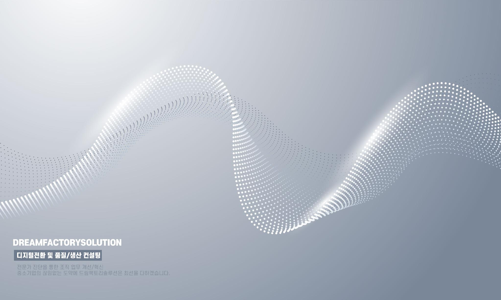
ISO9001:2015 컨설팅 완료보고서
[품질경영시스템]
ISO9001:2015 컨설팅/심사 주요 일정
Activities | 3 | 4 | 5 | 6 | 7 | 8 | 9 | 10 | 11 | 12 | 주요 산출물 | |||||||||||
4 | 11 (화) | 18 (화) | 25 | 1 (화) | 17 (목) | 30 (수) | 6 | 14 (수) | 20 | 28 | 04 | 11 (수) | 03 (수) | |||||||||
주일정 | 컨설팅 일정 | 방문/심사 일정 | ||||||||||||||||||||
1차 교육 | 품질경영시스템 요구사항 | ISO9001:2015 교육 교안 및 Test | ||||||||||||||||||||
ISO19011 심사 스킬 | ||||||||||||||||||||||
핵심문서 이해 | 통계적 공정관리 | |||||||||||||||||||||
측정시스템분석 이해 | ||||||||||||||||||||||
2차 진단 | 고객 점검 평가서 해석 및 수준 진단 | 프로세스 맵 문서 체계표 | ||||||||||||||||||||
기업 운영 양식 수집 및 운영 진단 | ||||||||||||||||||||||
업무 범위 파악 및 프로세스맵 | ||||||||||||||||||||||
3차 (COP) | 개발 관리 | COP 문서 구축 | ||||||||||||||||||||
구매 관리 | ||||||||||||||||||||||
생산 관리 | ||||||||||||||||||||||
인도 관리 | ||||||||||||||||||||||
고객 만족 | ||||||||||||||||||||||
4차 (MP) | 경영 관리 | MP 문서 구축 | ||||||||||||||||||||
개선 관리 | ||||||||||||||||||||||
5차 (SP) | 설비 보전 관리 | SP 문서 구축 | ||||||||||||||||||||
문서화된 정보 관리 | ||||||||||||||||||||||
교육 훈련 | ||||||||||||||||||||||
검사 업무 | ||||||||||||||||||||||
6차 (매뉴얼) | 품질경영 매뉴얼 | 품질경영 매뉴얼 내부심사 체크시트 | ||||||||||||||||||||
내부 심사 체크시트 | ||||||||||||||||||||||
성과 지표 | ||||||||||||||||||||||
1차
(교육)
2차
(진단)
3차
(COP)
4차
(SP)
5차
(MP)
6차
(매뉴얼)
1단계
(심사)
2단계
(심사)
- 품질경영시스템 1장~10장에 대한 요구사항 해설 및 이해
- 심사 계획 수립 및 내부 심사 운영 방법 이해
- 통계적 공정 관리 (SPC)에 대한 이해 및 사례 실습
- 측정 시스템 분석을 통한 측정 방법 및 운영 사례 실습
- 고객 요구 사항에 대한 품질경영시스템 반영
- 문서와 현업과의 일치성 확보
- 프로세스 맵 및 문서 체계표 작성
- COP (Customer oriented Process) 고객 지향 프로세스
: 고객을 만나기전 ~ 고객을 만난 후까지 고객을 위해 존재 하는 프로세스
- COP 프로세스, 절차서, 지침서, 양식 구축 및 정렬성 확보
- MP (Management Process) 경영 프로세스
: 내부적 운영과 시스템을 관할하는 프로세스
- SP (Supporting Process) 지원 프로세스
: MP 와 COP를 지원하기 위한 프로세스
- 품질경영시스템 매뉴얼 최종 확정
- 내부 심사를 위한 준비
- 각 프로세스의 핵심 성과 지표 구축
1.1 품질경영시스템 요구사항
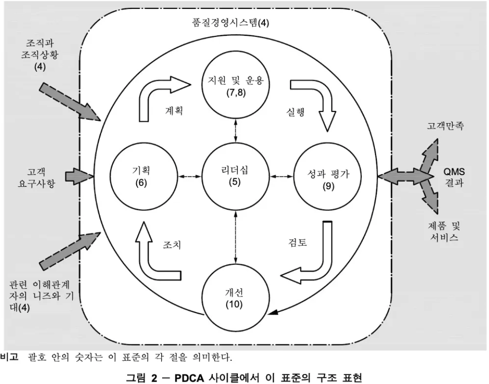
1.2 프로세스적 접근 방법
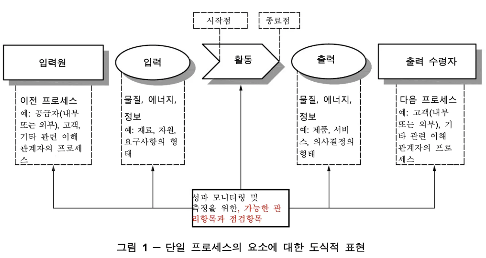
2. 품질경영시스템 구축 범위
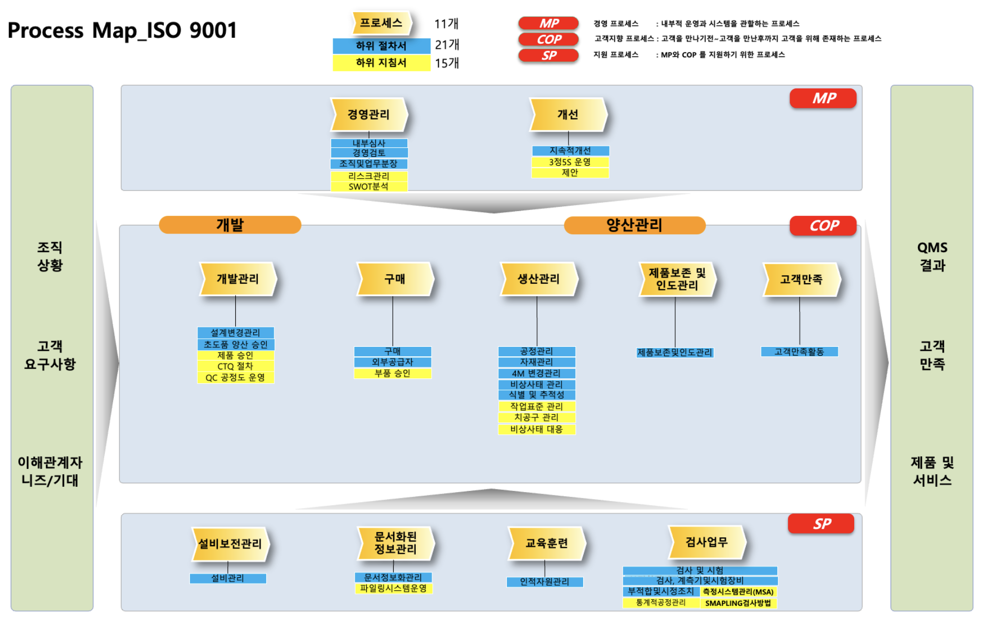
3. 문서 체계표
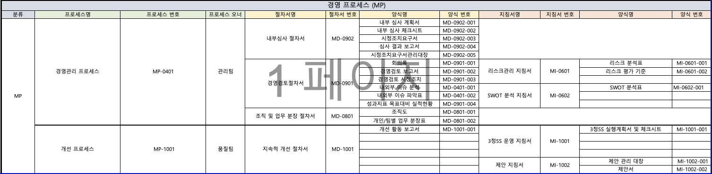
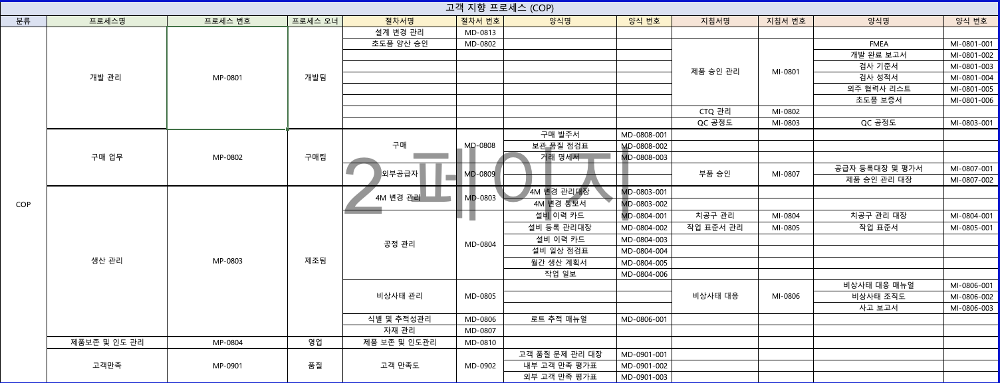
3. 문서 체계표
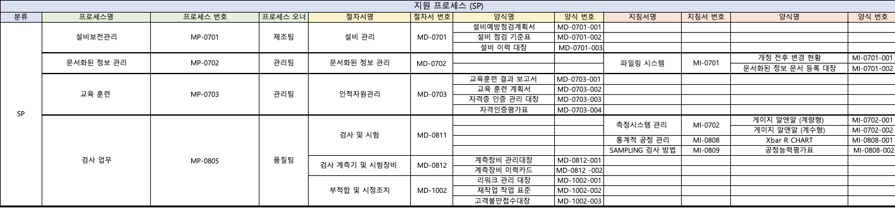
4. 프로세스 KPI
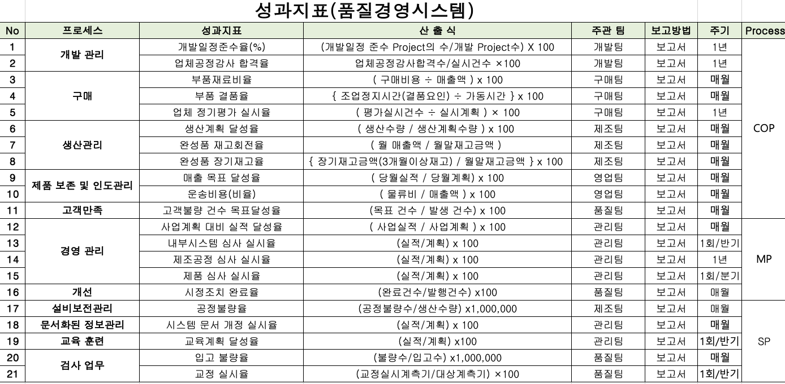
5. ISO 9001 품질경영시스템 과 구축 프로세스
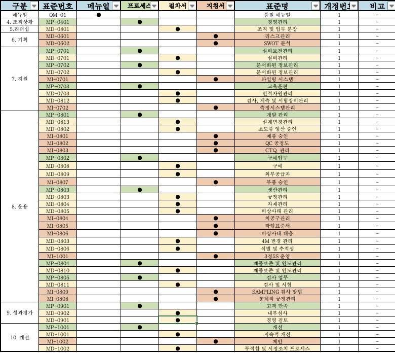
6. 품질경영 매뉴얼
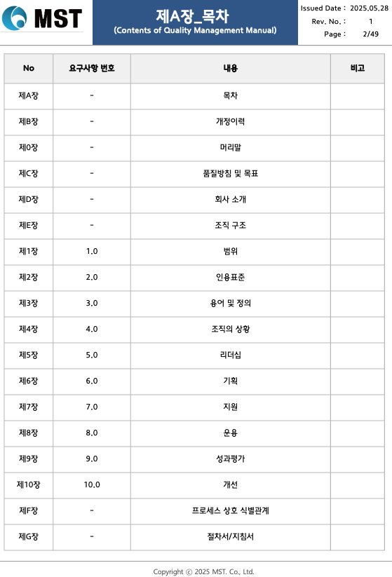
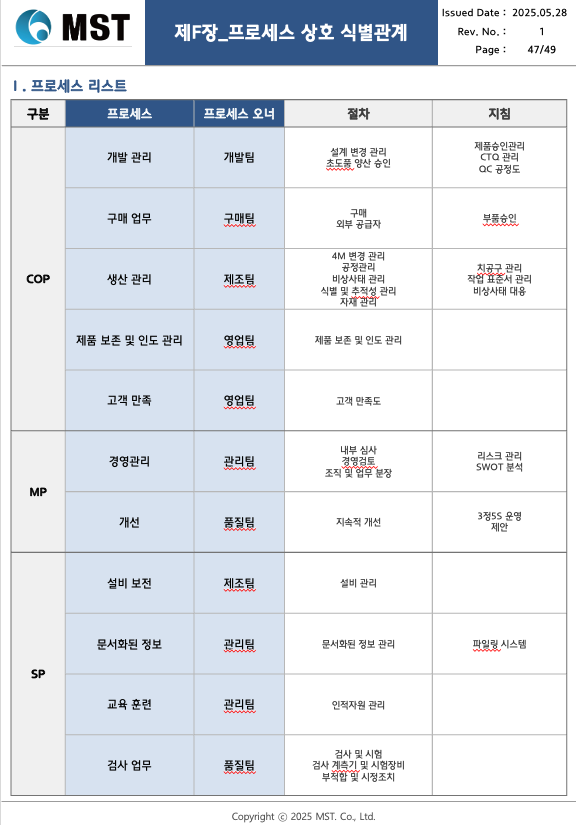
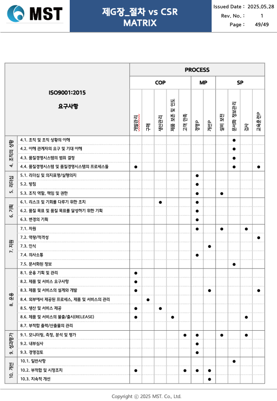
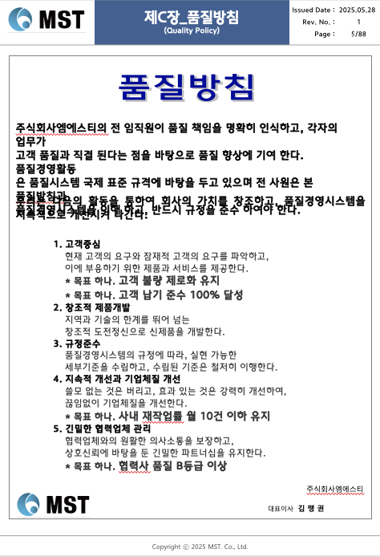
7. 프로세스/절차/지침/양식
프로세스
절차서
지침서
양식
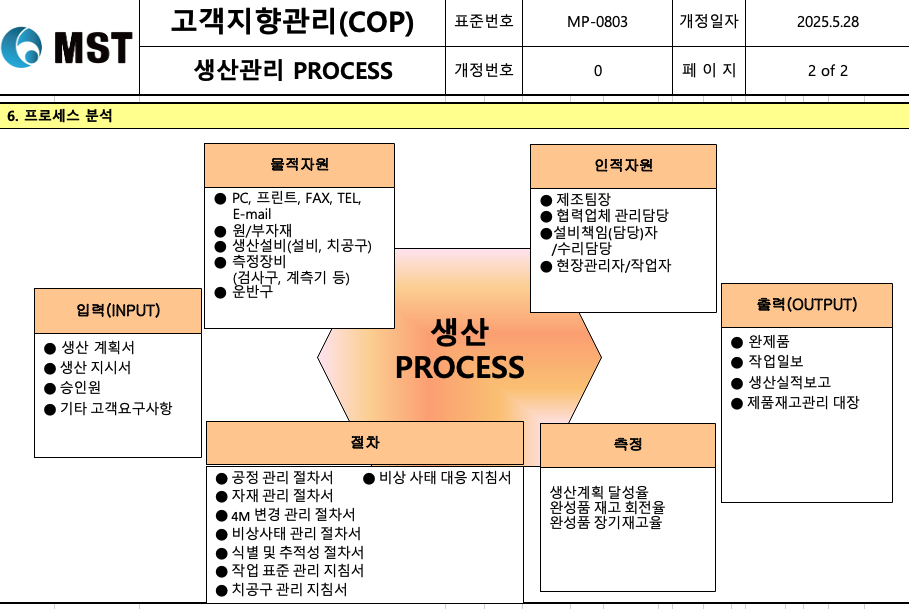
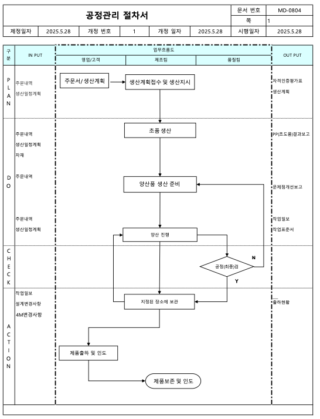
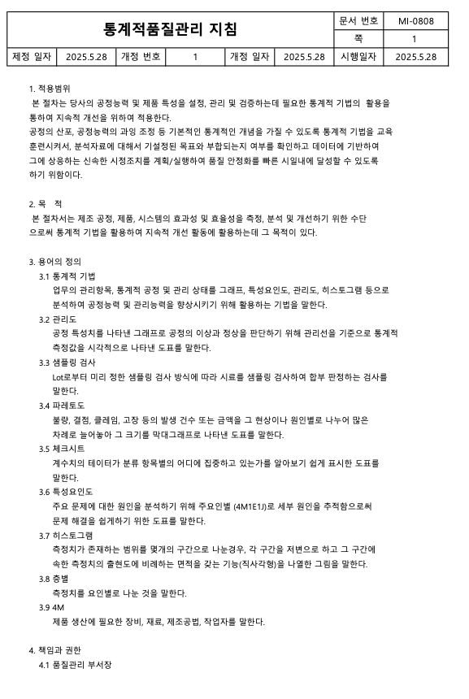
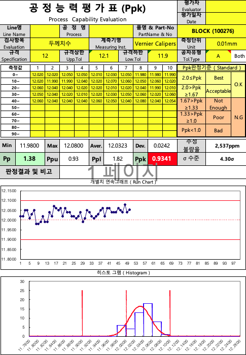
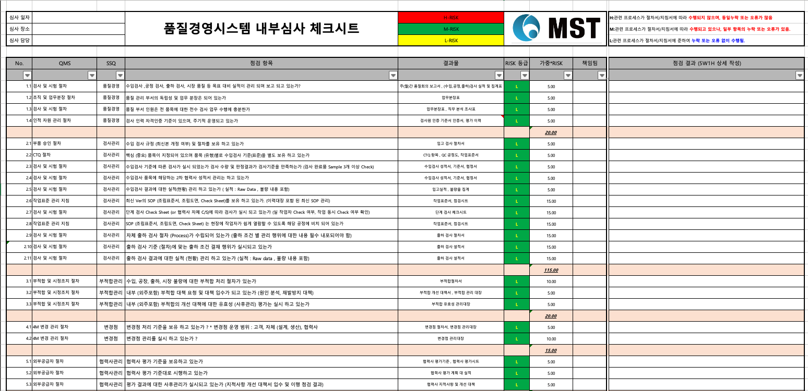
8. 내부심사 체크시트
SSQ 평가 시트
ISO9001
구축문서
ISO9001:2015 품질경영시스템 기준 점검 후 대책 수립
9. 향후 일정 관리
Activities | 7 | 8 | 9 | 10 | 11 | 12 | 주요 산출물 | ||||||||||||
1w | 2w | 3w | 4w | 5w | 6w | 7w | 8w | 9w | 10w | 11w | 12w | 13w | 14w | 15w | |||||
주일정 | 점검 일정 | 점검 및 심사 | |||||||||||||||||
1단계
(심사)
2단계
(심사)
1차
줌회의
2차
줌회의
내부
심사
고객
심사
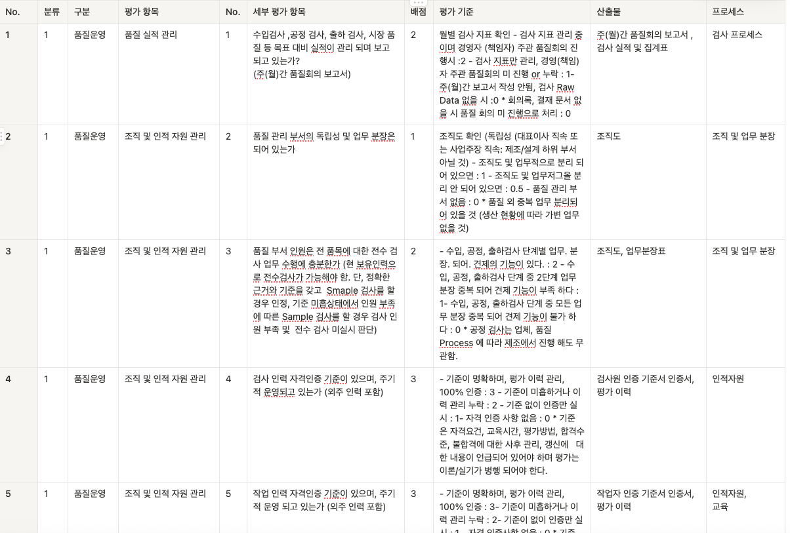
SSQ 평가 시트
ISO 구축 문서 준수시
100% 만족
10. 기타 (1일차 품질경영시스템 교육)
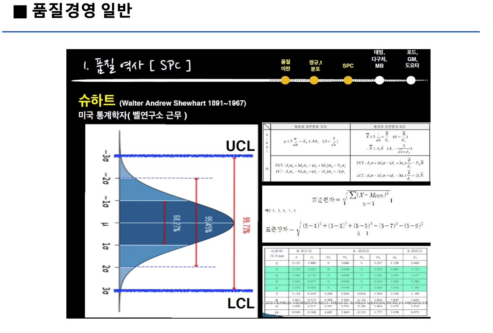
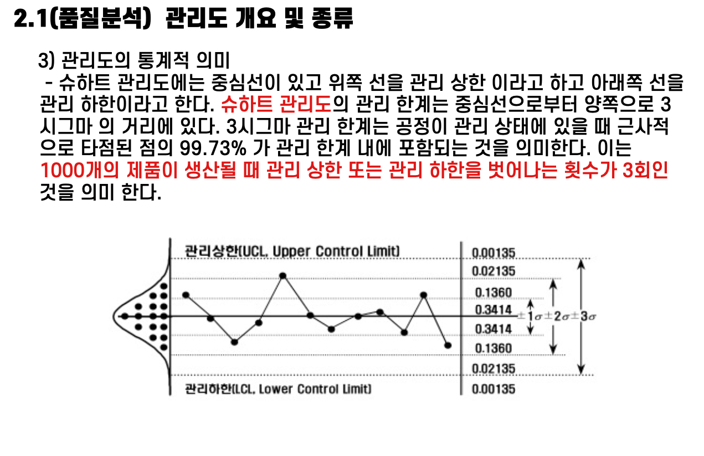
11. 마무리
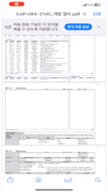